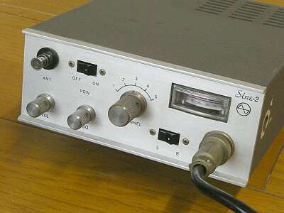 |
フロントパネル
ＡＦ-Ｖｏｌ、ＳＱ-Ｖｏｌ、ＣＨ切替スイッチ以外は、電源とバッテリ／Ｓのメーター切替スイッチのみと、きわめてシンプルです |
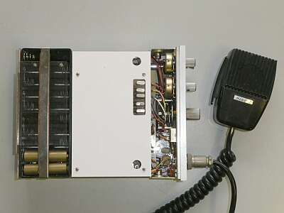 |
シャーシ上面
送信ユニット側です
水晶５CHを実装できます
電池ホルダは、電池が抜けないようちゃんと抑えが用意してあります
乾電池用にダミー電池２本も用意があります
１２Ｖ動作です
マイクはお決まりの？プリモ製
|
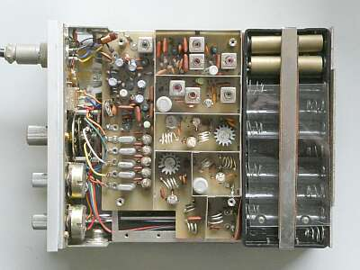 |
白のアクリル板を取り外して基板が見えるように
実は、振るとカラカラ音がする・・・なんだろうとアクリル板を取り外してみると、パワートランジスタのヒートシンクが２個、外れて転がっていました |
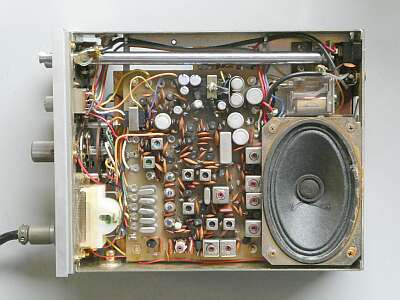 |
反対側
受信基板の側です
ロッドアンテナと、スピーカーが同居です
基板の材質は良いものが使ってあります（紙エポキシかな、ベークライトではない）
|
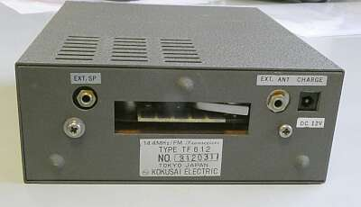 |
リアパネルです
ドッキングステーションがあったのだと想像します
基板に５極の接点が用意され、アクチュエータがついたマイクロSWがあり、後ろに何かが接続されると、電源が切り替わるようになっています
メーター照明ランプも､この接点に接続されています
外部アンテナ接続も､φ３.５のイヤホンジャックです
製品ラベルには「ＴＦ６１２」とあります |
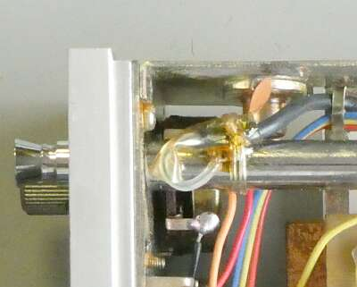 |
給電は、同軸ケーブルで引っ張って、フロントパネルすぐ下でロッドアンテナに接続
一般に、ロッドアンテナの根元に接続というのがほとんど
本機の場合、根元は絶縁して、根元から１４５ｍｍ位の場所でフロントパネルのすぐ下で給電してあります |
|
さすがに、Ｆが合わせられないくらい変動したクリスタルもありました
簡単な調整後の実測結果です
受信：－１３ｄｂμＶでＳＱがオープン
送信：１Ｗ弱
と、ほぼほぼ登場時の性能が維持されています、これは驚きです
プリント基板素材の選択を含め、業務用無線機器メーカー面目躍如と言ったところでしょうか |
|
|
| ＴＦ６３３ １０Ｗ ＢＯＯＳＴＥＲ |
偶然ですが、当時の１０Wブースターが手に入りました
これで、本体底面（背面）の秘密？が分かりました
何かドッキングステーションがあるのだろうと想像はできましたが、こんなブースターがあったことが分かりました
発売当時、ＨＦにしか興味がなく、本体の存在は知っていましたが、それ以上の記憶がありません |
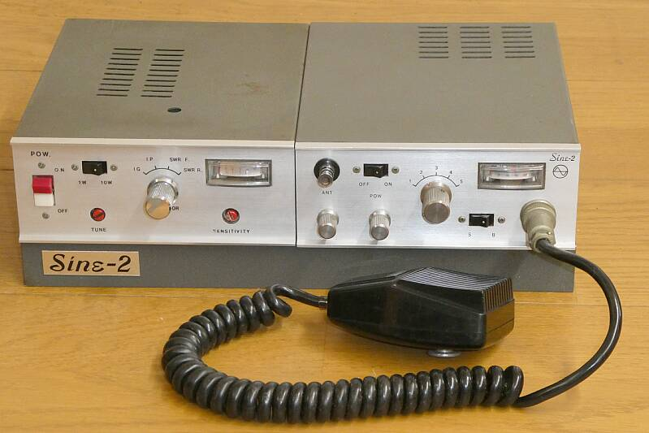 |
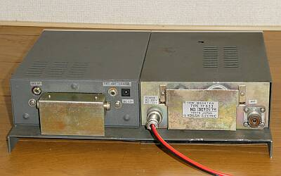 |
背面の様子です
アンテナをブースター右端のM型コネクタに接続し、ブースター左側の電源コネクタに電源を供給するだけ
電源やアンテナケーブルの渡りがありません
非常にスマートです
|
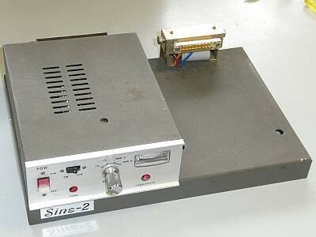 |
ブースターの製品としてはこのようなものです
本体と同じサイズ、同じデザインに見えるよう設計されています
メーター切替は、
ＩＧ、ＩＰ、進行波／反射波（ＳＷＲ）がチェックできます
台座部分に「Ｓｉｎｅ-２」のネームが入っています
背面に貼ってある製品ラベルは、「ＴＦ６３３」とあるだけです |
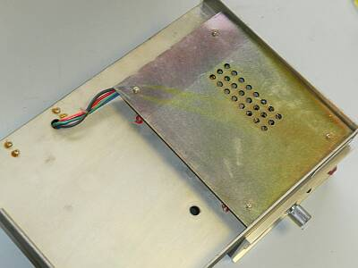 |
裏側です
穴は、通気のためのものです（６３６０自然空冷！） |
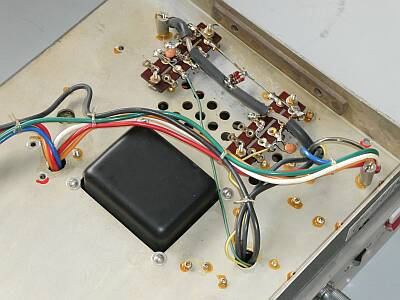 |
裏側のシールド板を外してみました
ＳＷＲの検知部です
同軸ケーブルを加工・・・まさに手作り感いっぱいです
背の高いトランスは、このようにシャーシ下に沈めることで上面の高さを抑え、表に見えるサイズを本体に合わせられるよう設計してあります
|
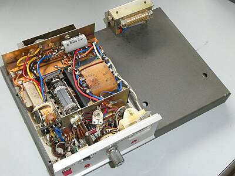 |
ブースター本体部のカバーを取り外した様子です
非常に、コンパクトに作られています
当初、台座の上に、アンプ部が載せられていると思ったのですが、そうではなく台座＋でアンプ部が作られています（最初の分解に悩みました） |
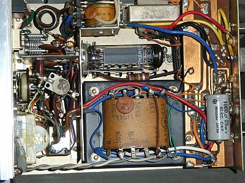 |
６３６０ 1本のブースターです
ＤＣ運用では、ＤＣ-ＤＣコンバータで高圧を得ています
商用電源接続時のＤＣ１２Ｖの定電圧回路周りに問題があるようなのですが、上に上に配線（半田付け）が行われていて、容易に分解・確認ができません
高電圧が、本体にかかってしまってはＮＧですので、商用電源運用はあきらめて、安全なＤＣ運用に特化して稼働するようＴＲＹしました |
|
何せ古いもので、接触不良ほか問題を抱えていました
ＡＣ１００Ｖテストでは、通電しばらくして２Ａのテスト用ヒューズが飛びました
内臓の安定化電源部周りに問題がありそうですが、その確認ができるまでの分解が簡単にできません
この際、商用利用は諦めて、ＤＣ利用限定で復旧を行いました
その結果、ＤＣ１２．０Ｖ運用でちょうど１０Ｗ、１３．５Ｖ運用で１３Ｗの出力が得られました（ＤＣ側で、約４Ａ消費）
素晴らしい！！
インバーター音（発振音）も、ほとんど気になりません |